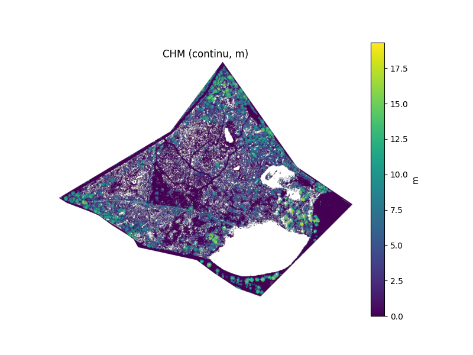

Modélisation de la morphologie d'un espace naturel à l'aide de données LiDAR
Les Landes de l'Hôpiteau (ZNIEFF 540014418) constituent un site naturel présent en Deux-Sèvres (79) géré par le Conservatoire d'Espaces Naturels de Nouvelle-Aquitaine. Ce site est notamment reconnu pour ses enjeux liés son important réseau de zones humides, ainsi qu'à son entomofaune patrimoniale. Le site, constitué de brandes de différents âges, présente une morphologie complexe, difficile d'accès pour une prospection humaine due à la densité des habitats. La combinaison de la densité des habitats et des enjeux liés aux zones humides rend l'intervention de gestion mécanique incertaine. Cette étude vise donc à :
- Identifier le réseau de micro-habitats humides à l'échelle du site ;
- Mettre en évidence les hauteurs de brandes pour identifier les secteurs prioritaires d'intervention de gestion ;
- Evaluer le potentiel de mécanisation pour la gestion du site et les impacts potentiellement liés ;
Méthodologie
Dans un premier temps, des données LiDAR ont été acquises pour le site à une précision de 50 cm via les données disponibles par l'IGN. Après traitement et découpage spatiale pour correspondre au périmètre du site, une modélisation en trois dimensions (X, Y et Z) a été réalisée, permettant d'apprécier visuellement et facilement la morphologie du terrain. Cette modélisation a été réalisée en Python, afin de faciliter la création de modèles de hauteur de canopée à posteriori.
La catégorisation des données a permis d'identifier différentes strates grossières de végétation. Les habitats humides (en eau), présente la particularité de ne pas avoir de points (du fait d'une mauvaise réflexion des lasers de télédéction LiDAR). Ainsi, les patchs blancs sans points de mesure représentent majoritairement des surfaces humides et permettent de visualiser le réseau par géoréférencement superposé.
Modélisation LiDAR intéractive, volontairement simplifiée (sans lissage
polygonial ni EYE) pour un chargement plus rapide et une visualisation plus fluide.
Clic gauche pour intéragir ; MAJ + Clic gauche pour déplacer ; CTRL + Clic gauche pour
tourner.
Dans un second temps, la mise en évidence de hauteur des brandes a été réalisé par l'application d'un modèle de hauteur de canopée (CHM). Ce modèle a permis d'estimer la hauteur de la végétation en utilisant les points de mesure disponibles, offrant ainsi une représentation précise de la structure verticale du paysage.
Résultats
Le site présente une structure topographique relativement plane, avec des altitudes comprises entre 152,7 m et 178,8 m et une moyenne de 161,2 m. La densité de points (13 points/m²) et l'espacement moyen estimé (0,28 m) garantissent une bonne résolution pour caractériser la végétation et le sol.
Un peu plus d'un tiers des points (38 %) correspondent au sol nu ou à la surface topographique (classe 2), le reste se répartissant majoritairement entre la végétation ligneuse basse, moyenne et haute. La forte proportion de points en classes 3, 4 et 5 (environ 4,8 millions de points cumulés) indique une couverture arborée bien développée et structurée, avec plusieurs strates verticales.
Les caractéristiques des retours laser (environ 64 % de premiers retours et une proportion similaire de derniers retours, mais seulement 36,7 % de retours uniques) suggèrent un couvert relativement dense mais hétérogène, permettant à une partie du signal de pénétrer jusqu'au sol. Cette configuration est typique de milieux boisés mixtes, où la canopée présente à la fois des zones fermées et des trouées.
Ces éléments laissent penser à un milieu présentant une mosaïque d'habitats forestiers, intéressant pour la biodiversité : présence potentielle de strates arbustives et arborées diversifiées, et zones ouvertes et potentiellement humides, favorables à certaines espèces. L'exploitation de ces données pour dériver un modèle de hauteur de canopée (CHM) et cartographier les structures verticales a permis de cibler les zones à fort intérêt écologique, d'identifier les secteurs en régénération, et d'appuyer la planification d'actions de gestion comme l'entretien de clairières ou la préservation d'îlots de vieux bois.
Les résultats ont été partagés avec les gestionnaires du site pour accompagner leurs décisions de gestion, notamment à l'aide de cartes géoréférencées, des résultats du modèle CHM ainsi qu'avec des rasters géoréférencés (GeoTIFF) contenant les valeurs calculées.

Sortie du modèle de hauteur de canopée sur le site.